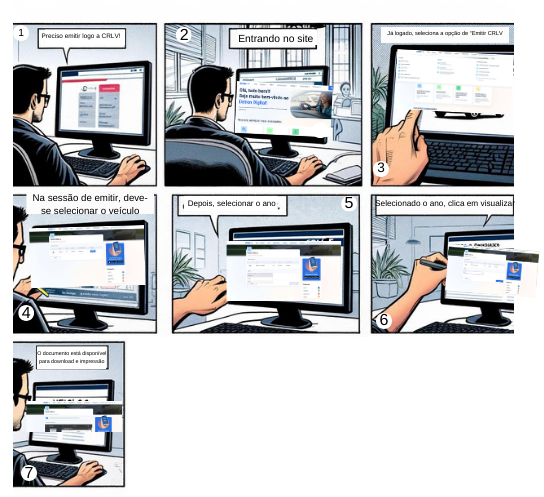

Storyboards
Introdução
O planejamento de uma avaliação do storyboard inclui a definição de metas, critérios, público-alvo e a criação de cronogramas apropriados para revisão e iteração. Uma avaliação minuciosa do storyboard melhorará a narrativa visual e garantirá que o projeto final atinja seus objetivos, conectando-se de maneira eficaz com o público.
Tarefa 1: Solicitar Permissão Internacional para Dirigir
A storyboard da figura 1 busca representar uma situação real de uso do sistema do Detran DF para emitir uma Permissão Internacional para Dirigir (PID). Contexto: Caio é um jovem que mora com seu gato e vai viajar para o Canadá, precisando que alguém alimente seu gato em sua ausência; vai falar com seu amigo que o lembra de emitir sua PID para poder dirigir no exterior.
Figura 1 - Storyboard Solicitar PID

Tarefa 2: Emissão de nada consta
Na figura 2 abaixo, é apresentado o storyboard da tarefa de emissão de nada consta. O usuário acessa a aba de serviços, seleciona a opção de emissão de nada consta, preenche o captcha, e clica em "Emitir nada consta", após isso, a página se atualiza, e o usuário já consegue visualizar o nada consta, assim como imprimi-lo ou envia-lo por e-mail.
Figura 2 - Storyboard Emissão de nada consta

Fonte: Vinicius Vieira (2024).
Tarefa 3: Alterar endereço do veículo
Storyboard 3 ilustra a mudança de um novo morador para uma vizinhança, quando ele se dá de cara com o vizinho, que o alerta que as correspondências do antigo dono da casa estão acumulando na caixa de correio. Isso o faz lembrar que ele próprio tem suas pendências a resolver; em especial, ele precisa atualizar a informação de endereço no cadastro de veículo do Detran-DF. Para isso, ele poderia ir até a sede, mas resolveu tentar pela internet, onde achou o Portal Detran-DF e conseguiu realizar a mudança.
Figura 3 - Storyboard Alterar Endereço

Tarefa 4: Emissão de CRLV
A CRLV, Certificado de Registro e Licenciamento de Veículo, é um documento obrigatório para todos os proprietários de veículos no Brasil. Ele serve como prova de que o veículo está devidamente registrado e licenciado para circular nas vias públicas.
Recentemente, foi introduzida a versão digital da CRLV (CRLV-e), que pode ser acessada por meio de aplicativos como o Carteira Digital de Trânsito (CDT) e o Portal Detran-DF. A CRLV-e tem a mesma validade legal que a versão física.
Na Figura 4, buscamos representar uma situação bastante usual para os motoristas. Mateus é um motorista de 35 anos que está no processo de venda do seu carro. Para dar prosseguimento, é necessário emitir toda a documentação para que seu veículo esteja devidamente regularizado e mostrar para o comprador que está tudo OK com o veículo, entre estes documentos está a CRLV. Para evitar filas e economizar tempo, optou por fazer o processo de emissão do documento pelo portal do Detran-DF.
Figura 4 - Storyboard Emitir CRLV

Tarefa 5: Procurar empresa cadastrada para realizar renovação de CNH
Storyboard 5 ilustra um caminhoneiro que percebe que sua CNH irá vencer em breve e precisa urgentemente encontrar uma escola que seja confiável para realizar a renovação de sua CNH e assim voltar atrabalhar sem preocupações em ser multado no trânsito.
Figura 5 - Storyboard de Consultar Empresas

Tarefa 6: Indicar condutor como real infrator
O storyboard 6 representa uma situação onde um idoso que emprestou o carro para seu filho que acabou recebendo uma multa. O idoso e seu filho então buscam como transferir a multa para o nome do filho para que ele possa receber os pontos na carteira e pagar a mesma, eles acabam encontrando o site do Portal Detran-DF e fazendo a identificação do real infrator.
Figura 6 - Storyboard Identificação Condutor infrator

Referências Bibliográficas
BARBOSA, S. D. J.; SILVA, B. S. Interação Humano-Computador. Elsevier, 2011.
Histórico de Versões
| Versão | Data | Descrição | Autor(es) | Revisor(es) |
|---|---|---|---|---|
1.0 |
15/05/2024 | Criação da página | Vinicius Vieira | Pedro Sena |
1.1 |
17/05/2024 | Adição da Storyboard de solicitação de PID | Pedro Sena | Daniel Coimbra |
1.2 |
18/05/2024 | Adição da Storyboard de emissão de CRLV | Filipe Carvalho | Pedro Sena |
1.3 |
22/05/2024 | Adição da Storyboard de alterar endereço do veículo | Daniel Coimbra | Pedro Sena |
1.4 |
22/05/2024 | Adição da Storyboard de Consultar Empresas | Pedro Miguel | Vinicius Vieira |
1.5 |
31/05/2024 | Correção de Formatação | Pedro Miguel | Filipe Carvalho |